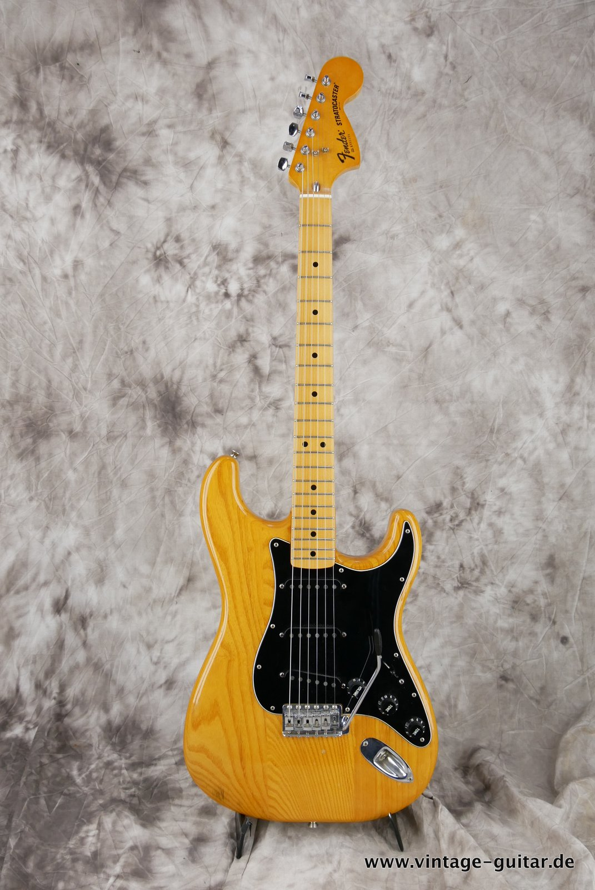
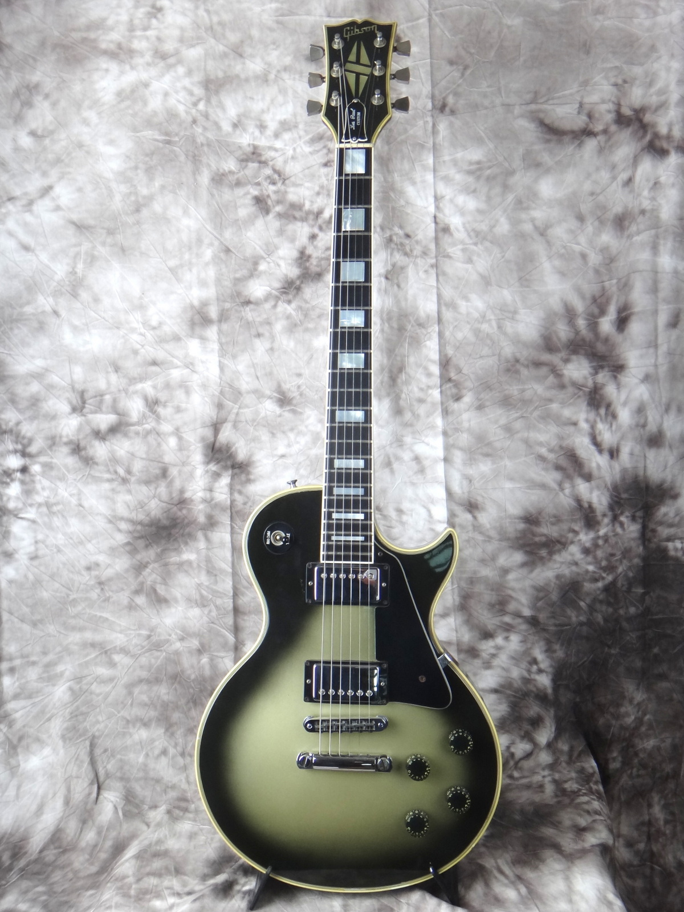

Fender Stratocaster
The Fender Stratocaster is a versatile electric guitar known for its bright, crisp sound and comfortable playability. Perfect for all genres of music.
Gibson Les Paul
The Gibson Les Paul is a legendary electric guitar with a rich, warm tone and excellent sustain. Favored by rock and blues players worldwide.
Martin D-28

The Martin D-28 is a classic acoustic guitar with a powerful, balanced tone. Ideal for both strumming and fingerpicking styles.